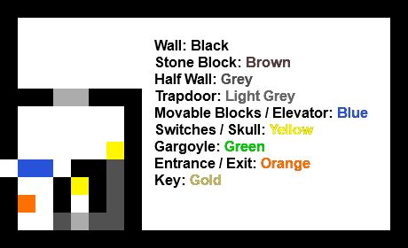
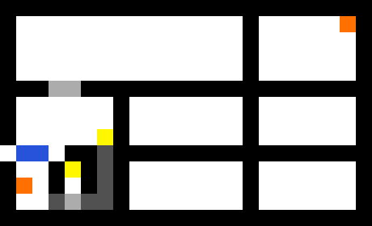
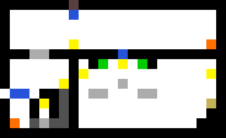
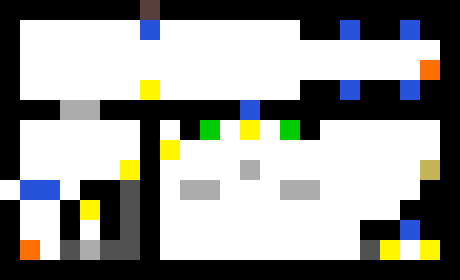
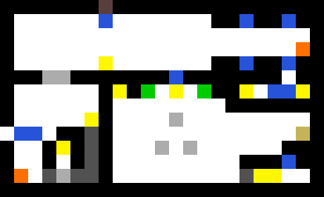

SEMESTER 1
This is a revised version of the work that I submitted for the first semester of the Introduction to Games Design module.
UI WIREFRAMES
Skills: Level Design | Engine: Escape Goat Editor
Before I started to come up with a concept for my level, I played through the game demo to grasp how the game played, and how the different mechanics could potentially interact with each other. Once I had done that, I moved on to creating a basic pixel map for the level.
The first section I mapped out was the first portion of the level. For this section, the player needs to use the mouse to press the switches and escape to the rest of the level. The trapdoors are open as of the start of the level, but to get out to the upper section they close, needing the player to think about how to use the mouse to reopen them again.
 For the main part of the level, I decided to experiment with the different objects and their interactions to see what ideas would work well and be fun for the player. Originally, I planned on using a grid-based room pattern where the player would traverse through small rooms, but changed it due to each room being small and cramped, and feeling the need to experiment with a larger areas to make more interesting puzzles.
 After playing around with different ideas, I came up with the idea of using the gargoyles and skulls to trap the player after they enter the lower section for the key, and then have them solve the puzzle to figure out a way to escape the room again.
 After testing the level myself and having other people play through the level, I decided that the lower puzzle needed to be more complex and have more obstacles to challenge the player. I added a trap for the mouse after the player presses a switch, which then moves blocks around the exit the area making the way to the end much more challenging. By using a spring switch, the mouse stays stuck in the single area, which then causes the blocks to move back and forth every time it loops around the block.
 Once I had developed the idea, I liked what I had come up with and decided to use it for the final level. However, after conducting more playtesting I found an issue with the mouse trap I had made. The player could just call the mouse back and the moving blocks would stop, ruining the difficulty of the final part of the level. To solve this problem, I had to rearrange the bottom of the level, instead having a switch that sets off an elevator that constantly moves to hit two switches controlling the trap. After I had solved this issue, I added some decorative elements to the level and uploaded the final design.
Level Playthrough Video
The final level, Escape Mouse v3, is available to play online here.